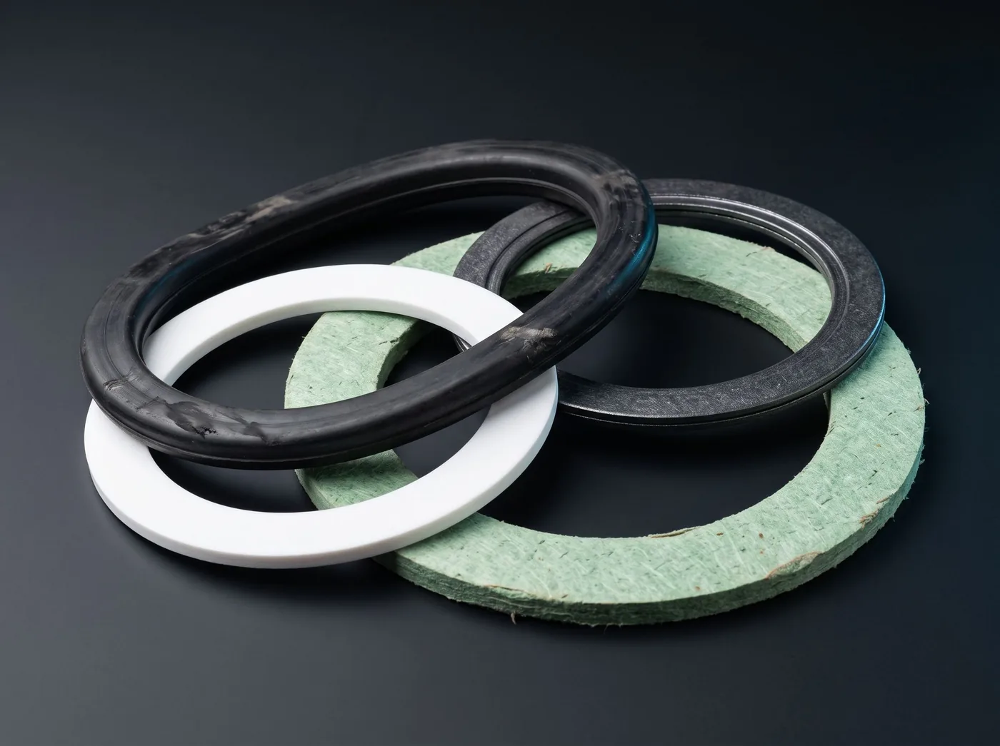
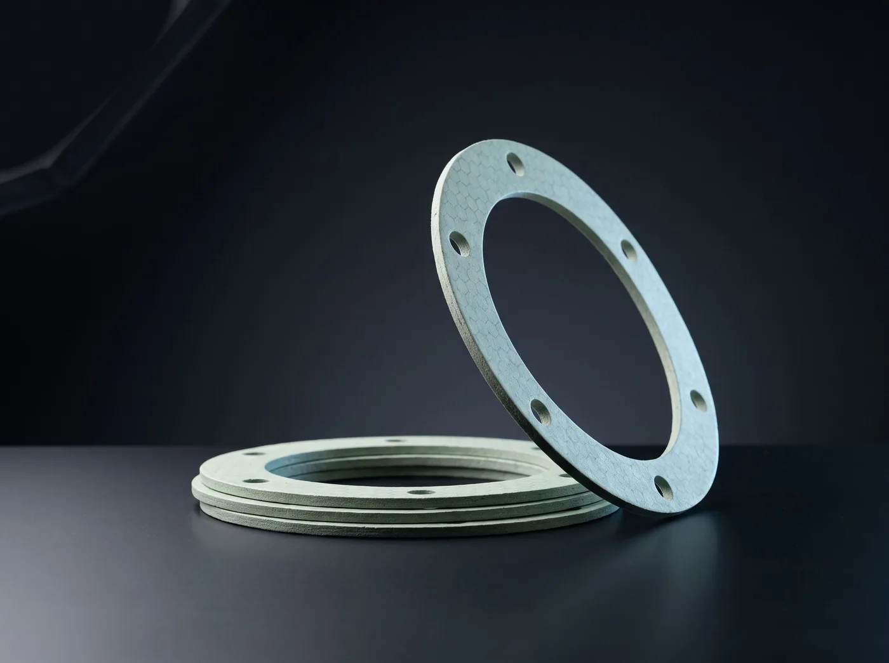
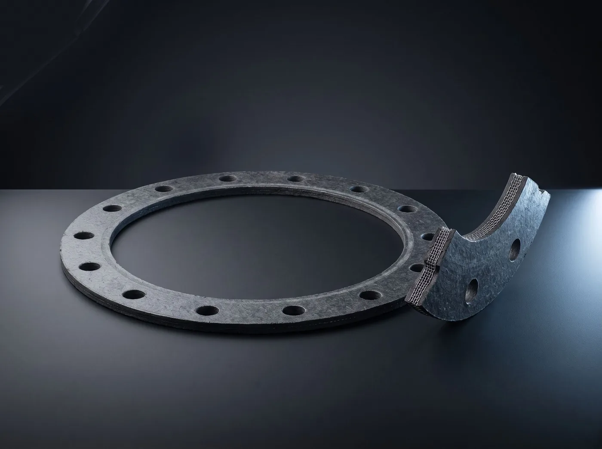
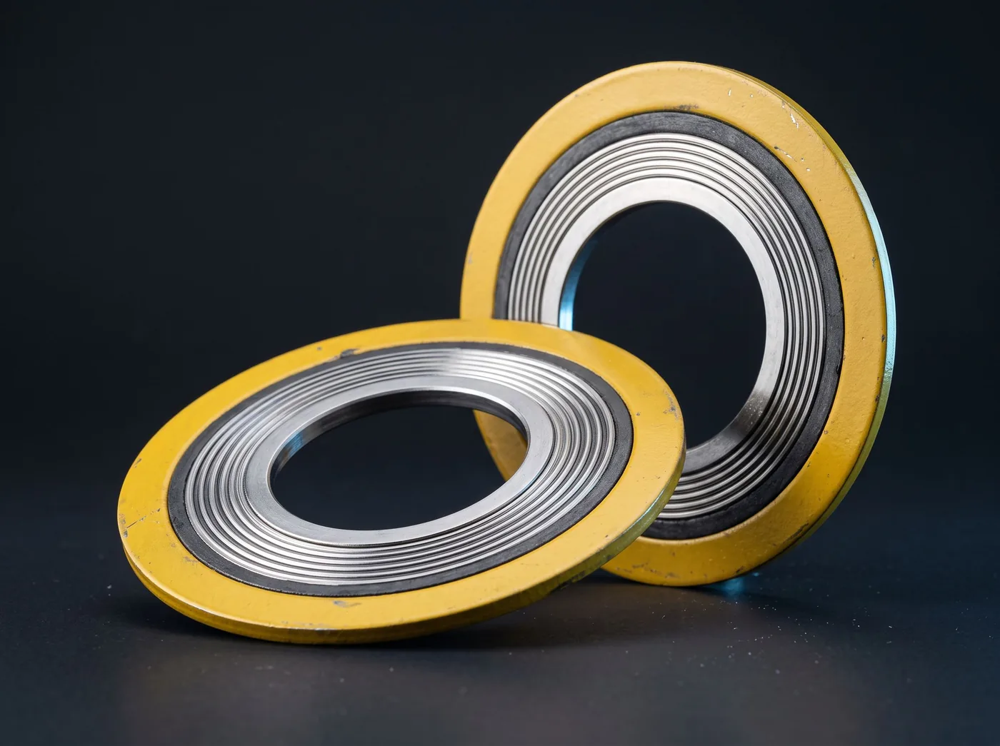
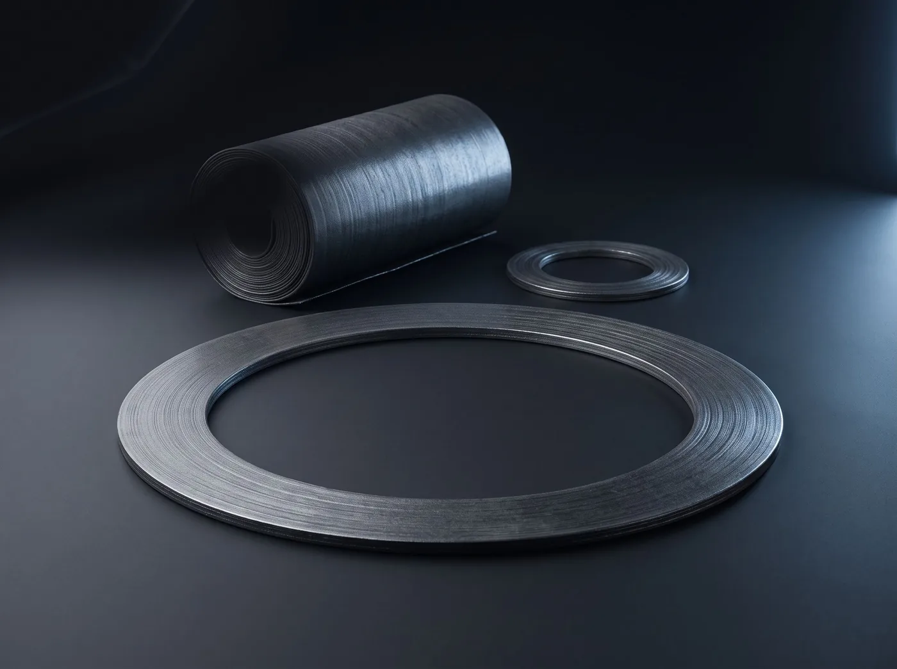

Özel Ölçü Contalar
Numuneden veya ölçüden yola çıkıp tek parça bile kesilen, kataloğa sığmayan contalar.
Özel Ölçü Contalar nedir?
Her conta katalog ölçüsünde değildir. Eski bir makinenin kapağı, özel bir menhol, artık üretilmeyen bir pompa gövdesi... Bu işlerde elinizdeki eski contayı veya flanşın ölçüsünü esas alıp uygun malzemeyi seçiyor, CNC kesim ve kalıpla tek parçadan seri üretime kadar kesiyoruz. Malzeme seçimi akışkana, sıcaklığa ve basınca göre birlikte yapılır.
Ne işe yarar?
- Numuneden birebir kopya çıkarılır, ölçü aramaya gerek kalmaz
- Tek adet de üretilir, minimum sipariş zorunluluğu yoktur
- Akışkana göre doğru malzemeye geçirilir, tekrarlayan arıza biter
- Acil işlerde aynı gün kesilip teslim edilir
Nerede kullanılır?
- Eski ve muadili bulunmayan ekipmanlar
- Menhol, el deliği ve tank kapakları
- Özel profilli makine kapakları
- Tersane bakım ve yenileme projeleri
| Kesim | CNC bıçak kesim, su jeti, kalıp |
|---|---|
| Malzeme | Klingrit, grafit, PTFE, NBR, EPDM, silikon, mantar |
| Ölçü | Numune, teknik resim veya flanş ölçüsü ile |
| Adet | 1 adetten itibaren |
| Kalınlık | 0,5 – 10 mm |
| Teslim | Acil işlerde aynı gün |
Ölçü katalogda yok mu?
Elinizdeki numuneden veya flanş ölçüsünden kesiyoruz. Tek adet de üretiyoruz.
Ölçü gönderAynı gruptan

Klingrit ContaAsbestsiz fiber conta levhasından kesilmiş, en çok kullanılan yassı flanş contası.
Telli Klingrit Contaİçine paslanmaz tel örgü gömülmüş, yüksek basınç ve buhar için takviyeli klingrit.
Spiral Sarımlı ContaMetal şerit ile grafit dolgunun sarmal sarılmasıyla yapılan, yaylanan yüksek performans contası.
Saf Grafit ContaGenişletilmiş grafitten kesilen, çok yüksek sıcaklığa dayanan yumuşak conta.